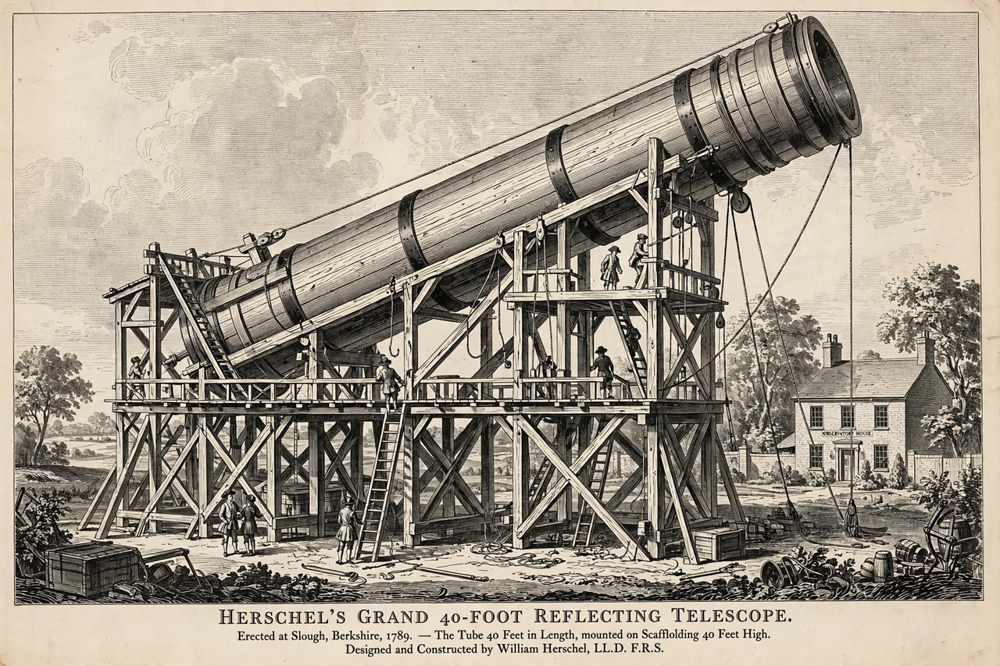

| Sir William Herschel | |
|---|---|
| Born | Friedrich Wilhelm Herschel, 15 November 1738, Hanover, Electorate of Hanover |
| Died | 25 August 1822 (aged 83), Slough, England |
| Known for | Discovery of Uranus; discovery of infrared radiation; deep-sky catalogues |
| Awards | Copley Medal (1781); Knight Bachelor (1816) |
| Family | Caroline Herschel (sister); John Herschel (son) |
Sir William Herschel (15 November 1738 – 25 August 1822) was a German-born British astronomer and composer. He is famous for discovering the planet Uranus in 1781 — the first planet discovered with a telescope — and for discovering infrared radiation, cataloguing thousands of nebulae and double stars, and building the largest telescopes of his age. He worked in close partnership with his sister Caroline Herschel.
Herschel was born in Hanover, then in personal union with Britain, into a family of military musicians. He came to England in 1757 as an oboist, and after the Seven Years' War settled there, working as a music teacher, organist and composer in Halifax and then Bath, where he became organist of the Octagon Chapel and director of public concerts. Astronomy, taken up in his thirties, gradually displaced music; he taught himself mirror-grinding and built his own reflectors.
On 13 March 1781, sweeping the sky from his garden in Bath with a 7-foot reflector, Herschel noticed an object that showed a disc and moved between observations. Reported first as a comet, it proved to be a planet beyond Saturn — the first discovered since antiquity — doubling the known radius of the Solar System. The discovery made him famous: George III appointed him King's Astronomer, and he named the planet Georgium Sidus in the king's honour, though the name Uranus ultimately prevailed. He later found two of its moons, Titania and Oberon (1787), and two moons of Saturn, Mimas and Enceladus (1789).
In 1800 Herschel passed sunlight through a prism and placed thermometers beyond the red end of the spectrum, finding the highest temperature there — the discovery of "calorific rays", now infrared radiation, the long-wavelength neighbour of the radio waves recognised a century later. The experiment was the first demonstration that light exists in invisible forms.
With Caroline recording, Herschel conducted systematic sweeps that catalogued some 2,500 nebulae and clusters and 800 double stars, vastly expanding earlier lists; his catalogues underpin the New General Catalogue (NGC) still used today. From star counts ("star-gages") he constructed the first model of the Milky Way's shape. His greatest instrument, the 40-foot telescope completed at Slough in 1789, with a 48-inch mirror, was the largest telescope in the world for half a century, though cumbersome in use. He showed that many "nebulae" were external star systems and coined the word "asteroid".
Herschel was a founder and first president of the Astronomical Society of London (later the Royal Astronomical Society) in 1820. His son John Herschel extended his surveys to the southern hemisphere. The Herschel Space Observatory (2009–2013) and the William Herschel Telescope on La Palma carry his name.